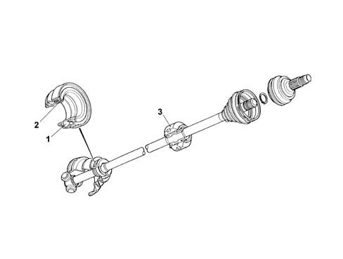
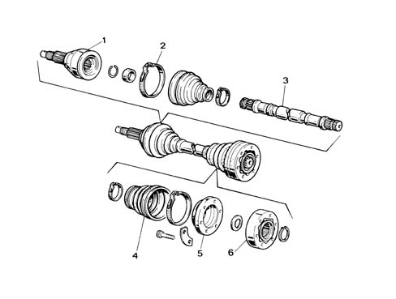

Introduction - AXLE
- Path
- Descriptions > 27 AXLE > Introduction - AXLE
- Kind
- system description
- Applies to
- all engines; all production periods
- Interactive page
- https://sloeber94.github.io/elrnDB-fMltpl/en/#/2892438
Applies to: all engines; all production periods
The driveshafts, the constant velocity joints and the intermediate shaft which make up the "transmission" assembly transmit the movement of the gearbox to the drive wheels.
Applies to: engines: 1.6 16v; all production periods
DRIVESHAFTS
The power is transmitted through driveshafts with wheel side constant velocity joints and gearbox side three-lobe joints.
In order to keep oil leaks to a minimum, there are sealed ball bearings (2) on the gearbox side boots, fitted on the actual driveshafts.
There is a seal (2) which is an integral part of the bearing (1).
This bearing can be replaced in a service situation.
The right driveshaft is fitted with a vibration damping mass which, in the case of dismantling, should be replaced in the correct position.

1, Sealed bearing 2, Gasket 3, Damper mass
Applies to: engines: 1.9 JTD 8V; all production periods
DRIVESHAFTS
The transmission is the type with wheel and gearbox side constant velocity joints.
An intermediate shaft transmits the power to the right driveshaft which is the same as the left.
This solution makes it possible to achieve a perfectly symmetrical distribution of the drive torque at both wheels. This avoids the bending curvature of the longer driveshaft, due to the drive torque transmitted which could cause variations in the vehicle dynamic geometry.

1, Wheel side constant velocity joint 2, Boot retaining band 3, Driveshaft 4, Constant velocity joint boot 5, Gearbox side constant velocity joint flange 6, Gearbox side constant velocity joint